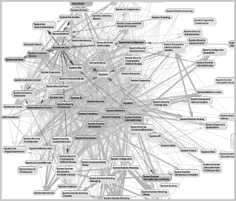
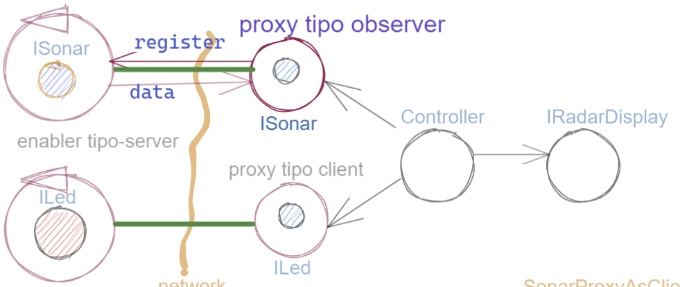

Prodotti della analisi¶
Importanti prodotti, al termine della fase di analisi dei requisiti e del problema sono:
la definizione di una architettura logica di riferimento che tiene conto dei vincoli posti dai requisiti e dal problema che ne consegue;
la proposta di un piano di lavoro per lo sviluppo del sistema.
Architettura logica come modello di riferimento¶
L’architettura logica di un sistema costituisce un modello del sistema ispirato dai requisiti funzionali e dalle forze in gioco nel dominio applicativo o nella specifica applicazione e mira ad identificare i macro-sottosistemi in cui il problema stesso suggerisce di articolare il sistema risolvente.
L’architettura logica è il più possibile indipendente da ogni ipotesi sull’ambiente di implementazione.
Un modo per valutare la qualità di una architettura logica e la coerenza con i requisiti è dare risposta a opportune domande, come le seguenti:
Se nel modello compaiono entità denotate da termini non definiti nel glossario costruito dall’analista dei requisiti, quale è la motivazione della loro presenza? Sono elementi realmente necessari o siamo di fronte ad una prematura anticipazione di elementi di progettazione?
Se nel modello non compaiono entità corrispondenti a termini definiti nel glossario, quale è la motivazione della loro mancanza? Siamo di fronte a una dimenticanza o vi sono ragioni reali per non includere questi elementi?
Le dipendenze tra le parti sono state impostate a livello logico o riflettono (erroneamente, in questa fase) una visione implementativa?
E’ possibile addentrarsi nei dettagli dell’architettura procedendo incrementalmente a livelli di astrazione via via descrescenti (con tecniche di raffinamento e zooming) o siamo di fronte a un ammasso non organizzato di parti, come quello della figura?

{kind=link}
Architettura ad oggetti¶
Se astraiamo dalla distribuzione (supponendo ad esempio che tutto il sistema possa essere supportato sul RaspberryPi), l’architettura logica del sistema risulta riconducibile a un classico schema read-eval-print in cui:
Il componente
Controllerdeve leggere dati dalSonarcome dispositivo di input e inviare comandi alLede alRadarDisplaycome dispositvi di output.
Il sistema presenta quattro componenti: tre Dispositivi di I/O e un Controller che li gestisce
Per rendere comprensibile questa architettura anche alla ‘macchina’ senza entrare in dettagli implementativi, possiamo introdurre opportuni modelli dei componenti utlizzando un linguaggio di programmazione.
Nel caso di Java, il costrutto interface può essere usato per denotare un componente catturandone come aspetto essenziale le funzionalità che esso deve offrire e una sorta di contratto sull’uso del componente.
Modello ad oggetti del dominio¶
I modelli iniziali dei componenti descritti da interfacce Java per il Led, il Sonar e il RadarDisplay costuiscono il nostro attuale modello del dominio. Ispirandoci agli schemi port-adapter e clean-architecture:
il modello del dominio sarà al centro della architettura del sistema
il software relativo dominio sarà scritto in un progetto dedicato
it.unibo.radarSystem22.domain
il software dell’applicazione sarà scritto in un progetto dedicato
it.unibo.radarSystem22
Le interfacce ILed e IRadarDisplay¶
Led |
RadarDisplay |
public interface ILed {
public void turnOn();
public void turnOff();
public boolean getState();
}
|
public interface IRadarDisplay{
public void update(String d, String a);
}
|
Le interfacce IDistance e ISonar¶
Distance |
Sonar |
public interface IDistance {
public int getVal( );
public String toString( );
}
|
public interface ISonar {
public void activate();
public void deactivate();
public IDistance getDistance();
public boolean isActive();
}
|
In quanto dispositivo-generatore di dati, ISonar offre metodi per attivare/disattivare il dispositivo e il
metodo getDistance per fornire il valore corrente di distanza misurata.
La interfaccia IDistance è introdotta per reppresentare il concetto di distanza, in modo
da non appiattire questo concetto su un tipo predefinito, come int. Notiamo che, come per
tutti i valori numerici, non vi sono metodi per modificare una distanza,
ma solo metodi per fornirne una rappresentazione in termini di tipi primitivi, tra cui mettiamo in evidenza
il metodo che fornisce una rappresentazione in termini di String.
Notiamo invece che, per il Led, abbiamo ‘ridotto’ il concetto di stato del Led al
tipo predefinito boolean in quanto questo tipo di dato è aderente alla logica del problema.
Architettura logica del sistema¶
La architettura logica suggerita dal problema è rappresentabile con la figura che segue:

Non vi sono (al momento) situazioni di uso concorrente di risorse.
La logica del Controller¶
A questo punto possiamo anche esprimere il funzionamento logico del Controller come segue:
ISonar sonar;
ILed led;
IRadarDisplay radar;
...
while( sonar.isactive() ){
IDistance d = sonar.getDistance(); //Acquisizione di un dato dal sonar
if( d.getDistance().getVal()) < DLIMIT ) //Elaborazione del dato
Led.turnOn() else Led.turnOff //Gestione del Led
radar.update( ""+d.getDistance().getVal(), "90") //Visualizzazione su RadarDisplay
}
Il come avviene l’interazione tra le parti relativa alla acquisizione dei dati e all’invio dei comandi
non è specificato al momento.
Come analisti del problema possiamo però evidenziare che il Controller
può acquisire i dati del Sonar in modi diversi:
inviando una richiesa al Sonar, che gli fornisce un dato come risposta;
agendo come un componente observer di un Sonar observable;
agendo com un subscriber su una topic di un broker su cui il Sonar pubblica i suoi dati.
Poichè abbiamo in precedenza escluso forme di interazione publish-subscribe, ci concentriamo al momento sui casi 2.1 e 2.2.
Questo modello sembra portare intrinsecamente in sè l’idea di una classica applicazione ad oggetti che deve essere eseguita su un singolo elaboratore (o una singola Java virtual machine). Ma forse non è proprio così.
Dagli oggetti alla distribuzione: i design patterns¶
Il fatto di avere espresso il Controller con riferimento a interfacce e non ad oggetti concreti,
significa che il progettista si può avvalere di appropriati design pattern per
implementare i componenti in modo che possano scambiare informazione via rete.
Il Proxy può essere utilizzato per accedere ad un un oggetto complesso tramite un oggetto semplice o quando si desidera nascondere il fatto che si sta chiamando un servizio remoto.
Il Decorator (anche chiamato ‘Smart Proxy’) viene utilizzato quando si desidera aggiungere funzionalità a un oggetto, senza usare l’ereditarietà.
L’Adapter viene utilizzato quando si desidera mappare un oggetto con una certa interfaccia su un altro oggetto che ha un ruolo funzionale simile, ma interfaccia diversa.
Il Bridge è molto simile a Adapter, ma definisce sia l’interfaccia che l’implementazione sottostante.
La Facade è un’interfaccia di livello superiore (più semplice) per un sottosistema di una o più classi.
Il Singleton evita di creare più di una istanza di una classe e può risultare utile per creare supporti alla comunicazione.
L’interfaccia Interaction2021¶
Astraendo dallo specifico protocollo, osserviamo che tutti i principali protocolli punto-a-punto sono in grado di stabilire una connessione stabile sulla quale inviare e ricevere messaggi.
Questo concetto può essere realizzato da un oggetto che rende disponibile opportuni metodi, come quelli definiti nella seguente interfaccia:
interface Interaction2021 {
public void forward( String msg ) throws Exception;
public String request( String msg ) throws Exception;
public String receiveMsg( ) throws Exception;
public void reply( String msg ) throws Exception;
public void close( ) throws Exception;
}
Il metodo forward è un metodo di trasmissione ‘fire-and-forget’, mentre il metodo request denota
l’invio di informazione cui deve corrispondere una ack o una response da parte del server.
Concettualmente, un server che invia una response/ack sulla connessione con un client effettua una operazione
di reply che assimiliamo alla forward di un messaggio con appropriato contenuto informativo.
L’informazione scambiata è rappresenta da una String che è un tipo di dato presente in tutti
i linguaggi di programmazione.
Non viene introdotto un tipo diverso (ad esempio Message) perchè non si vuole stabilire
il vincolo che gli end-points della connessione siano componenti codificati nello medesimo linguaggio di programmazione
La String restituita dal metodo receiveMsg può rappresentare una risposta a un messaggio
inviato in precedenza con forward.
Ovviamente la definizione di questa interfaccia potrà essere estesa e modificata in futuro, a partire dalla fase di progettazione, ma rappresenta una forte indicazione dell’analista di pensare alla costruzione di componenti software che possano ridurre il costo delle applicazioni future.
Il concetto di ‘oggetto enabler’¶
Traendo ispirazione dal pattern-decorator, possiamo evidenziare, come analisti, la necessità di introdurre un nuovo tipo di ente, che denominiamo enabler, che ha come scopo quello di incapsulare software ‘convenzionale’ utile e testato ma non adatto alla distribuzione (che denominiamo core-code) all’interno di un involucro capace di ricevere e trasmettere informazione.
Nel caso specifico, supponendo che il Controller sia allocato sul PC; abbiamo bisogno
di un enabler per il core-code del Sonar
di un enabler per il core-code del Led
Ad esempio, il Controller su PC potrebbe utilizzare un proxy tipo-server con interfaccia
ISonar che riceverà i dati da un enabler tipo-client del Sonar posto sul Raspberry.
Inoltre, il Controller potrebbe utilizzare un proxy tipo-client
con interfaccia ILed che trasmetterà i comandi a un enabler tipo-server del Led sul Raspberry.
{kind=link}
Tuttavia, come analisti, riteniamo sia opportuno limitare il traffico di rete,
evitando di inviare i dati del sonar anche quando non
sono richiesti dal sever. Per cui, una architettura migliore è porre sul PC, ad uso
del Controller, due proxy tipo-client, uno per il Led e uno per il Sonar, che interagiranno cone due
enabler tipo-server complementari posti sul RaspberryPi, inviando su Interaction2021:
messaggi interpretabili come comandi (ad esempio
activate,turnOff)messaggi interpretabili cone richieste (ad esempio
getDistance,getState)
{kind=link}
Notiamo che questo schema architettrurale è valido anche nel caso in cui il Sonar sia un dispositivo-observable:
{kind=link}
L’idea di enabler, unitamente all’idea di proxy, sembra dunque promettente per un passaggio graduale e sistematico dalla programmazione tradizionale ad oggetti alla programmazione distribuita. Siamo di fornte ai primi passi relativi a un
nuovo paradigma di programmazione per sistemi distribuiti
che troverà più avanti un suo pieno sviluppo con i concetti di attore e di microservizio.
Piano di lavoro¶
Trattandosi di uno sviluppo di tipo bottm-up, il piano di lavoro parte dallo sviluppo dei componenti, seguito da un opportuno ‘assemblaggio’ degli stessi in modo da formare il sistema che soddisfa i requisiti.
Poichè il nostro obiettivo è anche quello di riusare core-code fornito dal committente, procediamo come segue:
definizione dei componenti software di base legati ai dispositivi di I/O (Sonar, RadarDisplay e Led);
definizione di alcuni supporti TCP per componenti lato client e lato server, con l’obiettivo di formare un insieme riusabile anche in applicazioni future;
definizione di componenti enabler capaci di abilitare alle comunicazioni (via TCP o mediante altri tipi di protocollo) i componenti-base;
assemblaggio dei componenti per formare il sistema distribuito.
Il punto 2 relativo ai supporti non è indispensabile, ma, come detto, può costituire un elemento strategico a livello aziendale.